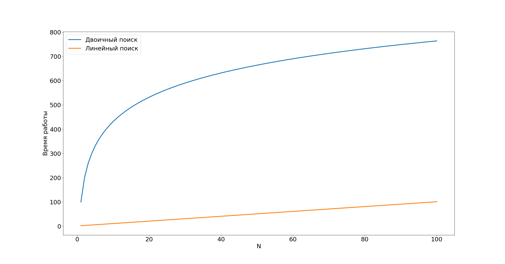
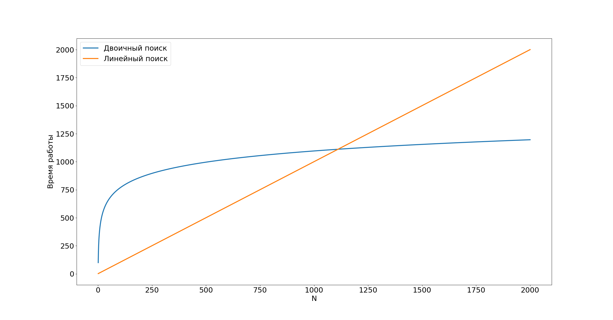
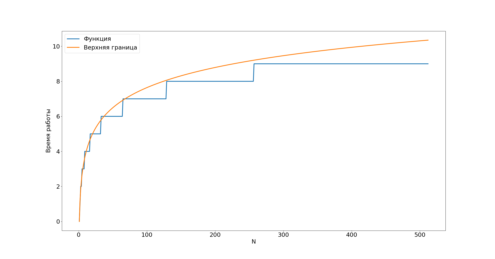
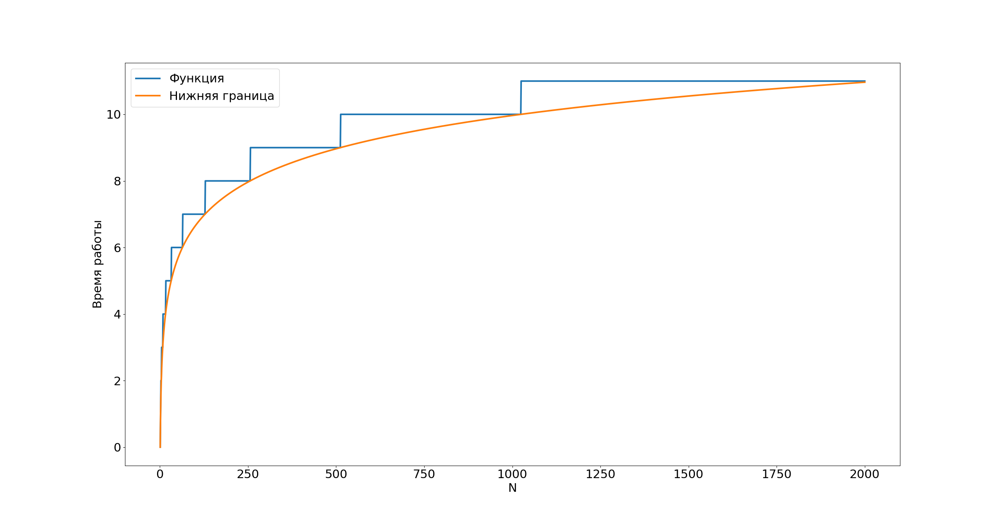
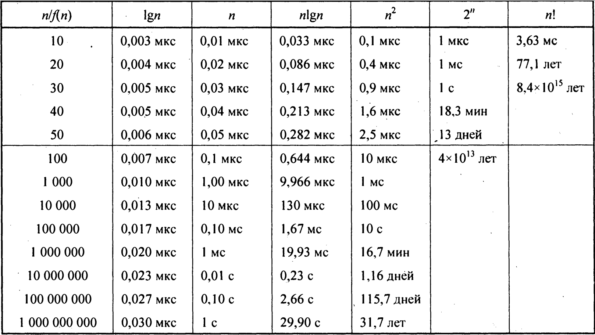

def find(a, x):
index = 0 # t_1
while a[index] < x: # t_2
index += 1 # t_3
return index # t_4
$t_1 + N * t_2 + (N - 1) * t_3 + t_4$
$(t_2 + t_3) * N + (t_1 + t_2 - t_3 + t_4)$
$a_{lin} N + b_{lin}$
def find(a, x):
l_1 = 0 # t_1
l_2 = len(a) - 1 # t_2
while l_1 != l_2: # t_3
k = (l_1 + l_2) // 2 # t_4
if x > a[k]: # t_5
l_1 = k + 1 # t_6
else:
l_2 = k # t_7
return l_1 # t_8
$(t_3 + t_4 + t_5) * log_2(N) + t_6 * log_2(N) * c + t_7 * log_2(N) * (1 - c) + (t_1 + t_2 + t_8)$,
где $c \in (0, 1)$ – константа, показывающая, в какой доле итераций выполняется условие
$(t_3 + t_4 + t_5 + t_6 * c + t_7 * (1 - c)) * log_2(N) + (t_1 + t_2 + t_3 + t_8)$
$a_{bin} * log_2(N) + b_{bin}$
Рассмотрим график зависимости времени работы алгоритмов с принятыми значениями констант



$O(g(N)) = \{f(N): \exists c \in {\R}_+, N_0 \in \N \ | \ \forall N \geqslant N_0: 0 \leqslant f(N) \leqslant cg(N)\}$
Таким образом, говорят, что $f(N) \in O(g(N))$ или, что чаще, $f(N) = O(g(N))$, когда можно подобрать такой множитель к функции $g(N)$, что она всегда будет выше функции $f(N)$ на графике правее определённой точки на оси абсцисс

$\Omega(g(N)) = \{f(N): \exists c \in {\R}_+, N_0 \in \N \ | \ \forall N \geqslant N_0: 0 \geqslant cg(N) \geqslant f(N)\}$
Таким образом, говорят, что $f(N) \in \Omega(g(N))$ или, что чаще, $f(N) = \Omega(g(N))$, когда можно подобрать такой множитель к функции $g(N)$, что она всегда будет ниже функции $f(N)$ на графике правее определённой точки на оси абсцисс
def find_max(a):
res = a[0]
for i in range(1, len(a)):
if a[i] > res:
res = a[i]
return res
$\Theta(g(N)) = \{f(N): \exists c_1, c_2 \in {\R}_+, N_0 \in \N \ | \ \forall N \geqslant N_0: 0 \leqslant c_1g(N) \leqslant f(N) \leqslant c_2g(N)\}$
Таким образом, говорят, что $f(N) \in \Theta(g(N))$ или, что чаще, $f(N) = \Theta(g(N))$, когда можно подобрать такие множители к функции $g(N)$, что с одним из них она всегда будет ниже функции $f(N)$, а с другим – выше неё на графике правее определённой точки на оси абсцисс
Далее в нашем курсе мы увидим, что большинство алгоритмов имеют функции сложности, входящие в достаточно небольшой список, а именно (по убыванию доминировнаия):
